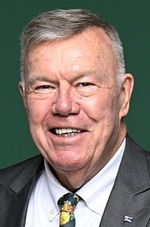

Australian federal political accountability and evidence platform
PUBLIC RECORD
What they said. What the evidence shows.
Try “housing”, “Medicare”, “inflation”, “Anthony Albanese”, “Angus Taylor” or an organisation such as “Auditor-General”.
Politicians
Verified profiles of federal parliamentarians. Filter by party. Profiles are never ranked.
Anthony Albanese
LaborPrime Minister
Grayndler, NSW
Claims checked8Contradicted by evidence3Corrections / clarifications0Integrity matters0Serious conduct matters0Mark Butler
LaborMinister for Health and Ageing; Minister for Disability and the NDIS
Hindmarsh, SA
Claims checked2Contradicted by evidence1Corrections / clarifications0Integrity matters0Serious conduct matters0
Matt Canavan
NationalsLeader of the Nationals; Shadow Minister for Trade, Investment and Tourism
Senator for QLD
Claims checked2Contradicted by evidence0Corrections / clarifications0Integrity matters1Serious conduct matters0
Michaelia Cash
LiberalLeader of the Opposition in the Senate; Shadow Attorney-General
Senator for WA
Claims checked1Contradicted by evidence1Corrections / clarifications0Integrity matters2Serious conduct matters0Jim Chalmers
LaborTreasurer
Rankin, QLD
Claims checked4Contradicted by evidence1Corrections / clarifications0Integrity matters0Serious conduct matters0Darren Chester
NationalsDeputy Leader of the Nationals; Shadow Minister for Agriculture, Fisheries and Forestry
Gippsland, VIC
Claims checked0Contradicted by evidence0Corrections / clarifications0Integrity matters0Serious conduct matters0
David Farley
One NationMember for Farrer
Farrer, NSW
Claims checked1Contradicted by evidence1Corrections / clarifications0Integrity matters0Serious conduct matters0Mehreen Faruqi
GreensSenator for New South Wales
Senator for NSW
Claims checked0Contradicted by evidence0Corrections / clarifications0Integrity matters1Serious conduct matters0
Katy Gallagher
LaborMinister for Finance; Minister for Women; Minister for the Public Service; Minister for Government Services
Senator for the ACT
Claims checked1Contradicted by evidence0Corrections / clarifications0Integrity matters1Serious conduct matters0Sarah Hanson-Young
GreensManager of Greens Business in the Senate
Senator for SA
Claims checked0Contradicted by evidence0Corrections / clarifications0Integrity matters0Serious conduct matters0
Pauline Hanson
One NationLeader of One Nation
Senator for QLD
Claims checked6Contradicted by evidence3Corrections / clarifications1Integrity matters6Serious conduct matters1Andrew Hastie
LiberalShadow Minister for Industry and Sovereign Capability
Canning, WA
Claims checked2Contradicted by evidence1Corrections / clarifications0Integrity matters1Serious conduct matters0Steph Hodgins-May
GreensDeputy Leader of the Australian Greens
Senator for VIC
Claims checked0Contradicted by evidence0Corrections / clarifications0Integrity matters0Serious conduct matters0
Jane Hume
LiberalDeputy Leader of the Opposition; Shadow Minister for Employment and Industrial Relations
Senator for VIC
Claims checked5Contradicted by evidence2Corrections / clarifications0Integrity matters0Serious conduct matters0
David Littleproud
NationalsShadow Minister for Emergency Management; Shadow Minister for Tourism
Maranoa, QLD
Claims checked5Contradicted by evidence4Corrections / clarifications1Integrity matters0Serious conduct matters0Richard Marles
LaborDeputy Prime Minister; Minister for Defence
Corio, VIC
Claims checked0Contradicted by evidence0Corrections / clarifications0Integrity matters1Serious conduct matters0Bridget McKenzie
NationalsLeader of the Nationals in the Senate; Shadow Minister for Infrastructure and Transport
Senator for VIC
Claims checked1Contradicted by evidence0Corrections / clarifications0Integrity matters2Serious conduct matters0
Nick McKim
GreensAustralian Greens Whip in the Senate
Senator for TAS
Claims checked0Contradicted by evidence0Corrections / clarifications0Integrity matters0Serious conduct matters0
James Paterson
LiberalShadow Minister for Defence
Senator for VIC
Claims checked1Contradicted by evidence1Corrections / clarifications1Integrity matters0Serious conduct matters0
Malcolm Roberts
One NationSenator for Queensland
Senator for QLD
Claims checked3Contradicted by evidence3Corrections / clarifications0Integrity matters1Serious conduct matters0David Shoebridge
GreensLeader of the Australian Greens
Senator for NSW
Claims checked3Contradicted by evidence0Corrections / clarifications0Integrity matters1Serious conduct matters0
Angus Taylor
LiberalLeader of the Opposition
Hume, NSW
Claims checked8Contradicted by evidence3Corrections / clarifications0Integrity matters3Serious conduct matters0Penny Wong
LaborMinister for Foreign Affairs; Leader of the Government in the Senate
Senator for SA
Claims checked0Contradicted by evidence0Corrections / clarifications0Integrity matters0Serious conduct matters0
23 profiles. Profiles are never ranked; default order is alphabetical.
The record so far
Neutral totals across verified records. PUBLIC RECORD does not rank politicians or parties.
Claims checked
53
Claims supported
5
Claims requiring context
24
Claims contradicted by evidence
24
Corrections recorded
3
Active integrity matters
0
Completed integrity matters
20
Politicians profiled
23
Verified 30 September 2026
Latest update · 1 October 2026
Today’s Record
New and changed items discovered in the latest update. Each card links to the full record and its evidence.
- New claim
New claim: David Shoebridge — “Australia spends as much as twice what Taiwan, a country with a similar-sized economy, spe…”
Video posted on X, 2024-04-28. Classified mixed from the published fact-check and the official sources it cites. AI draft pending editorial review.
David Shoebridge · Greens · 1 October 2026
- New claim
New claim: David Shoebridge — “The Migration Amendment (Removal and Other Measures) Bill 2024 would let the government ba…”
Video posted on X describing the Migration Amendment (Removal and Other Measures) Bill 2024 as a 'Trump-style travel ban bill', 2024-04-15. Classified mostly supported from the published fact-check and the official sources it cites. AI draft pending editorial review.
David Shoebridge · Greens · 1 October 2026
- New claim
New claim: David Shoebridge — “Australia has been selling weapons after weapons to Israel.”
Senate, debate to take note of answers to questions without notice, 2023-11-07. Classified mixed from the published fact-check and the official sources it cites. AI draft pending editorial review.
David Shoebridge · Greens · 1 October 2026
- New claim
New claim: Anthony Albanese — “The Coalition cut $20 million a year from Foodbank when in government.”
House of Representatives, Question Time, 2025-11-06. Classified contradicted from the published fact-check and the official sources it cites. AI draft pending editorial review.
Anthony Albanese · Labor · 1 October 2026
- New claim
New claim: Anthony Albanese — “The Coalition has opposed every measure of the Albanese government.”
House of Representatives, Question Time, answering an opposition question on cost of living and food security, 2025-11-03. Classified contradicted from the published fact-check and the official sources it cites. AI draft pending editorial review.
Anthony Albanese · Labor · 1 October 2026
- New claim
New claim: Anthony Albanese — “The Coalition opposed all three rounds of energy bill relief.”
House of Representatives, Question Time, responding to a question from the Leader of the Opposition, 2025-07-31. Classified contradicted from the published fact-check and the official sources it cites. AI draft pending editorial review.
Anthony Albanese · Labor · 1 October 2026
- New claim
New claim: Anthony Albanese — “The Coalition's 2014 budget cut $30 billion from public schools.”
Televised leaders' debates during the 2025 election campaign (Sky News and ABC debates; exact dates not stated in the fact-check), 2025-04-01. Classified mixed from the published fact-check and the official sources it cites. AI draft pending editorial review.
Anthony Albanese · Labor · 1 October 2026
- New claim
New claim: Anthony Albanese — “Australian families would be $7,200 worse off under the Coalition.”
House of Representatives, Question Time, 2025-02-04. Classified mixed from the published fact-check and the official sources it cites. AI draft pending editorial review.
Anthony Albanese · Labor · 1 October 2026
- New claim
New claim: Anthony Albanese — “790,000 new jobs have been created under Labor, more than under any first-term government …”
Post on X (video), 2024-03-26. Classified mixed from the published fact-check and the official sources it cites. AI draft pending editorial review.
Anthony Albanese · Labor · 1 October 2026
- New claim
New claim: Anthony Albanese — “The Prime Minister's September 2023 trip was the first bilateral visit to the Philippines …”
House of Representatives, discussing the forthcoming visit to Indonesia, the Philippines and India, 2023-09-05. Classified mostly supported from the published fact-check and the official sources it cites. AI draft pending editorial review.
Anthony Albanese · Labor · 1 October 2026
- New claim
New claim: Anthony Albanese — “The Uluru Statement from the Heart is a one-page document.”
House of Representatives, Question Time, responding to claims that the statement was 26 pages long, 2023-08-08. Classified supported from the published fact-check and the official sources it cites. AI draft pending editorial review.
Anthony Albanese · Labor · 1 October 2026
- New claim
New claim: Jim Chalmers — “The Coalition went to the 2025 election with a policy of higher taxes, bigger deficits and…”
Interview, Today program, Channel Nine, 2026-02-16. Classified mixed from the published fact-check and the official sources it cites. AI draft pending editorial review.
Jim Chalmers · Labor · 1 October 2026
- New claim
New claim: Jim Chalmers — “Angus Taylor made up his figures on price rises under Labor (groceries up 30 per cent; gas…”
Sky News Treasurers' Debate, responding to Angus Taylor's statement that groceries had risen 30 per cent and gas, electricity and insurance by more than 30 per cent under Labor, 2025-04-09. Classified mixed from the published fact-check and the official sources it cites. AI draft pending editorial review.
Jim Chalmers · Labor · 1 October 2026
- New claim
New claim: Jim Chalmers — “Peter Dutton described the indexation of pensions and payments as wasteful spending.”
Joint media release with the Minister for Social Services, 2025-03-11. Classified contradicted from the published fact-check and the official sources it cites. AI draft pending editorial review.
Jim Chalmers · Labor · 1 October 2026
- New claim
New claim: Jim Chalmers — “Labor has banked 88 per cent of revenue upgrades, compared with about 40 per cent under it…”
Pre-budget address to the Committee for Economic Development of Australia (April 2024; exact date not stated in the fact-check), 2024-04-01. Classified mostly supported from the published fact-check and the official sources it cites. AI draft pending editorial review.
Jim Chalmers · Labor · 1 October 2026
- New claim
New claim: Mark Butler — “The Shadow Health Minister confirmed Australians would not get free GP visits under a Coal…”
Media release by the Minister for Health and Aged Care, following the Shadow Health Minister's appearance at Senate estimates, 2025-02-26. Classified contradicted from the published fact-check and the official sources it cites. AI draft pending editorial review.
Mark Butler · Labor · 1 October 2026
- New claim
New claim: Mark Butler — “Bulk billing rates were in free fall under the previous Coalition government.”
Media release, 'Bulk billing slide stopped thanks to Albanese Government', repeated the same day in interviews on ABC News Breakfast, ABC Radio AM and Sky News, 2024-04-29. Classified mixed from the published fact-check and the official sources it cites. AI draft pending editorial review.
Mark Butler · Labor · 1 October 2026
- New claim
New claim: Katy Gallagher — “Peter Dutton plans $347 billion in cuts to services such as Medicare, pensions and housing…”
Media release, 'Services to be worse in Hobart under Dutton', 2025-01-14. Classified mixed from the published fact-check and the official sources it cites. AI draft pending editorial review.
Katy Gallagher · Labor · 1 October 2026
- New claim
New claim: Angus Taylor — “NAB has confirmed that Labor's tax changes will push rents up by 30 per cent.”
House of Representatives, Question Time (question to the Prime Minister), 2026-08-18. Classified contradicted from the published fact-check and the official sources it cites. AI draft pending editorial review.
Angus Taylor · Liberal · 1 October 2026
- New claim
New claim: Angus Taylor — “Net overseas migration this year is 80,000 above the government's own forecasts.”
Comments to the media, 22 April 2026, 2026-04-22. Classified mixed from the published fact-check and the official sources it cites. AI draft pending editorial review.
Angus Taylor · Liberal · 1 October 2026
- New claim
New claim: Angus Taylor — “Ampol is being forced by Labor's emissions standards to export its fuel.”
Sky News interview clip posted by Mr Taylor on Facebook, 2026-03-19. Classified mixed from the published fact-check and the official sources it cites. AI draft pending editorial review.
Angus Taylor · Liberal · 1 October 2026
- New claim
New claim: Angus Taylor — “Investment, including mining investment, has fallen off a cliff under Labor.”
Interview, Sky News First Edition, 2025-10-27. Classified contradicted from the published fact-check and the official sources it cites. AI draft pending editorial review.
Angus Taylor · Liberal · 1 October 2026
- New claim
New claim: Angus Taylor — “Australia is approaching two million new migrants in five years under Labor.”
Interview, Sky News, 2025-03-25. Classified mixed from the published fact-check and the official sources it cites. AI draft pending editorial review.
Angus Taylor · Liberal · 1 October 2026
- New claim
New claim: Angus Taylor — “Labor has added 36,000 new Canberra-based public servants.”
Press conference on inflation data, 2025-01-29. Classified contradicted from the published fact-check and the official sources it cites. AI draft pending editorial review.
Angus Taylor · Liberal · 1 October 2026
- New claim
New claim: Angus Taylor — “Personal income tax rose by a record 27 per cent in Labor's first 18 months in office.”
Opinion piece in The Australian, 2024-01-15. Classified mixed from the published fact-check and the official sources it cites. AI draft pending editorial review.
Angus Taylor · Liberal · 1 October 2026
- New claim
New claim: Angus Taylor — “Australia's core inflation is higher than every G7 country's.”
Interview, ABC TV Insiders, 2023-05-07. Classified supported from the published fact-check and the official sources it cites. AI draft pending editorial review.
Angus Taylor · Liberal · 1 October 2026
- New claim
New claim: Jane Hume — “Around half a million people a year are coming to Australia, putting pressure on services …”
Interview, ABC Insiders, 2026-02-15. Classified mixed from the published fact-check and the official sources it cites. AI draft pending editorial review.
Jane Hume · Liberal · 1 October 2026
- New claim
New claim: Jane Hume — “Australia has never had a tax on unrealised capital gains.”
Interview reported by Sky News after the May 2025 federal election, 2025-05-15. Classified contradicted from the published fact-check and the official sources it cites. AI draft pending editorial review.
Jane Hume · Liberal · 1 October 2026
- New claim
New claim: Jane Hume — “Age pension applications take 50 per cent longer and low income card applications five tim…”
Interview, ABC, 2025-03-24. Classified mixed from the published fact-check and the official sources it cites. AI draft pending editorial review.
Jane Hume · Liberal · 1 October 2026
- New claim
New claim: Jane Hume — “Labor has added $347 billion in spending since the election.”
Post on Instagram (December 2024; exact date not stated in the fact-check), 2024-12-01. Classified mixed from the published fact-check and the official sources it cites. AI draft pending editorial review.
Jane Hume · Liberal · 1 October 2026
- New claim
New claim: Jane Hume — “NAB said rents would rise by 30 per cent because of Labor's tax changes.”
Video posted on Facebook, 2026-08-19. Classified contradicted from the published fact-check and the official sources it cites. AI draft pending editorial review.
Jane Hume · Liberal · 1 October 2026
- New claim
New claim: Michaelia Cash — “The proposed Voice to Parliament would embed in the Constitution paramount rights for one …”
Interview with The Australian, shortly after her appointment as Shadow Attorney-General, 2023-05-10. Classified contradicted from the published fact-check and the official sources it cites. AI draft pending editorial review.
Michaelia Cash · Liberal · 1 October 2026
- New claim
New claim: James Paterson — “The Chinese Navy conducted live-fire exercises in Australian waters.”
Interview, Sky News First Edition, 2025-02-27. Classified contradicted from the published fact-check and the official sources it cites. AI draft pending editorial review.
James Paterson · Liberal · 1 October 2026
- New claim
New claim: Andrew Hastie — “China's navy test-fired in Australian waters without permission.”
Interview, ABC Afternoon Briefing, 2025-07-14. Classified contradicted from the published fact-check and the official sources it cites. AI draft pending editorial review.
Andrew Hastie · Liberal · 1 October 2026
- New claim
New claim: Andrew Hastie — “Labor's approach to Defence has resulted in more than $80 billion in cuts and delays.”
Joint media statement with Opposition Leader Peter Dutton, 'Broken funding promise', during the 2025 election campaign (April 2025; exact date not stated in the fact-check), 2025-04-01. Classified mixed from the published fact-check and the official sources it cites. AI draft pending editorial review.
Andrew Hastie · Liberal · 1 October 2026
- New claim
New claim: Matt Canavan — “The CSIRO has admitted that coal is the cheapest form of electricity.”
Post on Facebook, featuring a cropped image of the CSIRO GenCost levelised-cost-of-electricity chart, 2025-07-28. Classified mixed from the published fact-check and the official sources it cites. AI draft pending editorial review.
Matt Canavan · Nationals · 1 October 2026
- New claim
New claim: Matt Canavan — “Lack-of-power notices followed the closure of the Liddell power station.”
Post on X, with screenshots of four Australian Energy Market Operator market notices, 2023-04-28. Classified mixed from the published fact-check and the official sources it cites. AI draft pending editorial review.
Matt Canavan · Nationals · 1 October 2026
- New claim
New claim: Bridget McKenzie — “Labor's proposed vehicle efficiency standard is a 'family car tax' that will add thousands…”
Joint media release with Ted O'Brien, published on the Liberal Party website, 2024-02-19. Classified mixed from the published fact-check and the official sources it cites. AI draft pending editorial review.
Bridget McKenzie · Nationals · 1 October 2026
- New claim
New claim: David Littleproud — “Labor will bring 1.8 million new people into Australia over the next five years.”
Interview, 4BC Breakfast radio, Brisbane (March 2025; exact date not stated in the fact-check), 2025-03-01. Classified mixed from the published fact-check and the official sources it cites. AI draft pending editorial review.
David Littleproud · Nationals · 1 October 2026
- New claim
New claim: David Littleproud — “The seven-star National Construction Code adds $60,000 to the cost of building a home.”
Interview, Sky News Australia, 2025-02-17. Classified contradicted from the published fact-check and the official sources it cites. AI draft pending editorial review.
David Littleproud · Nationals · 1 October 2026
- New claim
New claim: David Littleproud — “The New Vehicle Efficiency Standard will raise the price of a Ford Everest by $6,000 and a…”
Interview, Sky News Australia, 2025-01-01. Classified contradicted from the published fact-check and the official sources it cites. AI draft pending editorial review.
David Littleproud · Nationals · 1 October 2026
- New claim
New claim: David Littleproud — “More than 50 per cent of the price of a pot of beer is federal tax.”
Interview, 3AW Mornings with Tom Elliott, answering how much of the price of a pot of beer is federal tax, 2024-09-23. Classified contradicted from the published fact-check and the official sources it cites. AI draft pending editorial review.
David Littleproud · Nationals · 1 October 2026
- New claim
New claim: David Littleproud — “Landholders who host transmission lines receive no financial benefit.”
Interview, ABC Insiders, 2024-08-18. Classified contradicted from the published fact-check and the official sources it cites. AI draft pending editorial review.
David Littleproud · Nationals · 1 October 2026
- New claim
New claim: Pauline Hanson — “Australia is in the worst per-capita recession in its history.”
Post on Facebook (December 2024; exact date not stated in the fact-check), 2024-12-01. Classified mixed from the published fact-check and the official sources it cites. AI draft pending editorial review.
Pauline Hanson · One Nation · 1 October 2026
- New claim
New claim: Pauline Hanson — “Net migration under Labor has exceeded 1,375 people a day for three years.”
Speech, National Press Club, Canberra, 2026-06-17. Classified contradicted from the published fact-check and the official sources it cites. AI draft pending editorial review.
Pauline Hanson · One Nation · 1 October 2026
- New claim
New claim: Pauline Hanson — “South Australia lets short-term visa holders vote in council elections and non-citizens si…”
Podcast interview published on YouTube (late January 2026; exact date not stated in the fact-check), 2026-01-01. Classified contradicted from the published fact-check and the official sources it cites. AI draft pending editorial review.
Pauline Hanson · One Nation · 1 October 2026
- New claim
New claim: Pauline Hanson — “Only 1,800 of 51,605 skilled migrants were in the construction industry.”
Video posted on Instagram, in which she said 739,000 people were brought in between 2022 and 2023 and only 51,605 were skilled, 2026-07-28. Classified mixed from the published fact-check and the official sources it cites. AI draft pending editorial review.
Pauline Hanson · One Nation · 1 October 2026
- New claim
New claim: Pauline Hanson — “About 130,000 Australians sleep rough every night.”
Speech, National Press Club, Canberra, 2026-06-17. Classified mixed from the published fact-check and the official sources it cites. AI draft pending editorial review.
Pauline Hanson · One Nation · 1 October 2026
- New claim
New claim: Pauline Hanson — “People under 35 are the largest group reporting capital gains and would be most affected b…”
Speech, National Press Club, Canberra (after citing figures on 18 to 34-year-olds reporting capital gains), 2026-06-17. Classified contradicted from the published fact-check and the official sources it cites. AI draft pending editorial review.
Pauline Hanson · One Nation · 1 October 2026
- New claim
New claim: Malcolm Roberts — “Australian agriculture contributes nothing to global emissions because natural cycles abso…”
Senate, Question Time, 2024-02-07. Classified contradicted from the published fact-check and the official sources it cites. AI draft pending editorial review.
Malcolm Roberts · One Nation · 1 October 2026
- New claim
New claim: Malcolm Roberts — “Australia's 27 million population figure does not include 2.7 million visa holders.”
Post on X, sharing an ABC News post about the population reaching 27 million, 2024-01-30. Classified contradicted from the published fact-check and the official sources it cites. AI draft pending editorial review.
Malcolm Roberts · One Nation · 1 October 2026
- New claim
New claim: Malcolm Roberts — “Mass bleaching has been a natural part of Great Barrier Reef cycles for millennia.”
Senate speech on a motion about the Great Barrier Reef (March 2024; published on the senator's website and as a video on X on 25 March 2024), 2024-03-01. Classified contradicted from the published fact-check and the official sources it cites. AI draft pending editorial review.
Malcolm Roberts · One Nation · 1 October 2026
- New claim
New claim: David Farley — “Forty per cent of Australia's food comes from the electorate of Farrer.”
Interview, ABC TV Insiders, 2026-08-23. Classified contradicted from the published fact-check and the official sources it cites. AI draft pending editorial review.
David Farley · One Nation · 1 October 2026
- Investigation closed
Integrity record: High Court ruling that Senator Gallagher was ineligible to be elected at the 2016 election under section 44(i) of the Constitution (Re Gallagher)
High Court of Australia sitting as the Court of Disputed Returns, on a reference from the Senate Outcome: Court's answers: whether section 44(i) created a vacancy, 'Yes'; how it should be filled, 'by a special count of the ballot papers'. The Par AI draft pending editorial review.
Katy Gallagher · Labor · 1 October 2026
- Investigation closed
Integrity record: Federal Court adverse-action claim by Mr Marles's former chief of staff against the Commonwealth, Mr Marles and the Prime Minister's chief of staff, settled without findings
Federal Court of Australia (proceeding under the Fair Work Act 2009) Outcome: Settled confidentially before any hearing; no judgment and no findings. Government spokesperson, 21 March 2025: 'The welfare of all staff ha AI draft pending editorial review.
Richard Marles · Labor · 1 October 2026
- Investigation closed
Integrity record: Police assessment of altered City of Sydney travel figures cited in Mr Taylor's 2019 letter to the Lord Mayor of Sydney; no further investigation by the Australian Federal Police
NSW Police Force (Strike Force Garrad); Australian Federal Police; Commonwealth Ombudsman (review of the AFP's handling) Outcome: No charges. Australian Federal Police, 6 February 2020: 'The AFP assessment of this matter identified there is no evidence to indicate the M AI draft pending editorial review.
Angus Taylor · Liberal · 1 October 2026
- Investigation closed
Integrity record: Auditor-General's performance audit of grants under the Supporting Reliable Energy Infrastructure Program, including the Collinsville feasibility-study grant approved by Mr Taylor as Minister
Australian National Audit Office (Auditor-General Report No. 31 of 2020-21) Outcome: ANAO conclusion: 'The award of funding under the Supporting Reliable Energy Infrastructure Program was not fully informed by an appropriate AI draft pending editorial review.
Angus Taylor · Liberal · 1 October 2026
- Investigation closed
Integrity record: Senate committee majority report on Mr Taylor's 2017 representations about the grasslands listing while a compliance case was open against Jam Land Pty Ltd, a company in which he holds an indirect interest
Senate Environment and Communications References Committee; Department of the Environment and Energy (EPBC Act compliance, concerning the company); Federal Court of Australia (concerning the company) Outcome: Senate committee majority, December 2019: Mr Taylor's conduct 'represents clear breaches of the Statement of Ministerial Standards'; recomme AI draft pending editorial review.
Angus Taylor · Liberal · 1 October 2026
- Investigation closed
Integrity record: Australian Federal Police investigation into the disclosure to media of the October 2017 searches of Australian Workers' Union offices; no prosecution
Australian Federal Police; Commonwealth Director of Public Prosecutions Outcome: No charges against anyone. Australian Federal Police, 15 January 2019: 'The AFP can confirm the CDPP has advised they will not be proceeding AI draft pending editorial review.
Michaelia Cash · Liberal · 1 October 2026
- Investigation closed
Integrity record: Federal Court findings in the Australian Workers' Union's challenge to the Registered Organisations Commission investigation, including the allegation that it was commenced for an improper political purpose connected to the Minister
Federal Court of Australia (Bromberg J; Full Court: Allsop CJ, Besanko and White JJ) Outcome: No adverse finding against Senator Cash. First instance: the alleged improper purpose was 'not demonstrated on the evidence'. Full Court: 't AI draft pending editorial review.
Michaelia Cash · Liberal · 1 October 2026
- Investigation closed
Integrity record: Termination of Mr Hastie's Standby Army Reserve service after he declined a Defence request to remove images of himself in uniform from 2016 election material
Australian Army / Department of Defence Outcome: Department of Defence statement, as quoted by the ABC on 9 June 2016: 'Defence contacted Mr Hastie, a member of the standby Army Reserve, an AI draft pending editorial review.
Andrew Hastie · Liberal · 1 October 2026
- Investigation closed
Integrity record: High Court ruling that Senator Canavan was not disqualified under section 44(i) of the Constitution (Re Canavan)
High Court of Australia sitting as the Court of Disputed Returns, on a reference from the Senate Outcome: Order of the Court of Disputed Returns: 'There is no vacancy by reason of s 44(i) of the Constitution in the representation of Queensland in AI draft pending editorial review.
Matt Canavan · Nationals · 1 October 2026
- Investigation closed
Integrity record: Auditor-General's audit of the Community Sport Infrastructure Program and the finding by the Secretary of the Department of the Prime Minister and Cabinet that Senator McKenzie breached the Statement of Ministerial Standards
Australian National Audit Office (Auditor-General Report No. 23 of 2019-20); Secretary of the Department of the Prime Minister and Cabinet, advising the Prime Minister under the Statement of Ministerial Standards Outcome: Secretary of the Department of the Prime Minister and Cabinet, as stated in his submission to the Senate Select Committee: 'I concluded Sena AI draft pending editorial review.
Bridget McKenzie · Nationals · 1 October 2026
- Investigation closed
Integrity record: Senate Select Committee on Administration of Sports Grants: inquiry, evidence by order of the Senate, and final report
Senate of Australia; Senate Select Committee on Administration of Sports Grants Outcome: Majority report, paragraph 4.77: 'Given the minister has not been able to provide any credible or documented rationale for her decision maki AI draft pending editorial review.
Bridget McKenzie · Nationals · 1 October 2026
- Investigation closed
Integrity record: Queensland prosecution over the 1997 registration of Pauline Hanson's One Nation: convictions quashed and acquittals entered
Supreme Court of Queensland; Queensland Police Service; Queensland Director of Public Prosecutions; District Court of Queensland; Queensland Court of Appeal; Crime and Misconduct Commission (Queensland) Outcome: Convictions quashed; verdicts of acquittal entered (Queensland Court of Appeal, 6 November 2003). No conviction stands. The Crime and Miscon AI draft pending editorial review.
Pauline Hanson · One Nation · 1 October 2026
- Investigation closed
Integrity record: Electoral Commission investigation into disclosure of the aircraft used in the party's 2016 campaign (party-level matter)
Australian Electoral Commission Outcome: AEC investigation report, 16 November 2018: 'As disclosure in relation to the plane has been achieved, the matter is considered closed.' No AI draft pending editorial review.
Pauline Hanson · One Nation · 1 October 2026
- Investigation closed
Integrity record: Electoral Commission review of the party's 2019 election funding claim: overpayment and enforceable undertaking given as party agent
Australian Electoral Commission Outcome: Entitlement varied to $2,675,324.42 after an overpayment of $165,442.03 was identified; enforceable undertaking accepted on 15 June 2021. No AI draft pending editorial review.
Pauline Hanson · One Nation · 1 October 2026
- Investigation closed
Integrity record: Federal Court finding that a September 2022 post to Senator Mehreen Faruqi contravened section 18C of the Racial Discrimination Act; appeal dismissed
Federal Court of Australia; Full Court of the Federal Court of Australia Outcome: Appeal dismissed on 27 July 2026; the first-instance orders stand. No High Court application had been located as at 1 October 2026. AI draft pending editorial review.
Pauline Hanson · One Nation · 1 October 2026
- Investigation closed
Integrity record: Senate censure and seven-sitting-day suspension after wearing a burqa in the chamber
Senate, Parliament of Australia Outcome: Censured by the Senate and suspended for seven consecutive sitting days (25 November 2025). AI draft pending editorial review.
Pauline Hanson · One Nation · 1 October 2026
- Investigation closed
Integrity record: Australian Federal Police assessment of complaints about televised comments about Muslims: no offence threshold met
Australian Federal Police Outcome: AFP statement: 'The AFP has determined the comments do not meet the threshold for relevant offences, including within the Combatting Antisem AI draft pending editorial review.
Pauline Hanson · One Nation · 1 October 2026
- Investigation closed
Integrity record: High Court ruling that the 2016 election was void under section 44(i) of the Constitution
High Court of Australia sitting as the Court of Disputed Returns Outcome: Parliament of Australia record: 'Election ruled void 27.10.2017 under section 44 (i) of the Constitution; ruled ineligible from 2.7.2016.' T AI draft pending editorial review.
Malcolm Roberts · One Nation · 1 October 2026
- Conduct matter update
Conduct record: Allegation by former senator Brian Burston of sexual harassment (2019)
Status: allegation AI draft pending editorial review.
Pauline Hanson · One Nation · 1 October 2026
- Investigation closed
Integrity record: Senate resolution on the conduct of senators after Senator Faruqi's sign protest during the Governor-General's address opening the 48th Parliament
Senate of Australia (motion moved by the Leader of the Government in the Senate) Outcome: Motion on the conduct of senators agreed to by the Senate on 23 July 2025. According to Guardian Australia, Senator Faruqi is excluded from AI draft pending editorial review.
Mehreen Faruqi · Greens · 1 October 2026
- Investigation closed
Integrity record: Censure by the New South Wales Legislative Council over his response to a staff member's alleged vandalism of a Captain Cook statue and his attendance at a forest protest (2020)
Legislative Council of New South Wales Outcome: Censure motion carried by the New South Wales Legislative Council with government, Labor and One Nation support (The Sydney Morning Herald, AI draft pending editorial review.
David Shoebridge · Greens · 1 October 2026
Demonstration profiles
Fictional politicians and fictional sources that show how PUBLIC RECORD presents claims, evidence, repeated claims, corrections, integrity matters and serious conduct matters. No real person is depicted.
- Demonstration data
Tom Brackenridge
Civic ReformShadow Minister for Energy
Ironbark, WA
Claims checked4Contradicted by evidence1Corrections / clarifications0Integrity matters1Serious conduct matters0 - Demonstration data
Hugh Castellan
Harbour AllianceMember for Silvergum
Silvergum, SA
Claims checked1Contradicted by evidence0Corrections / clarifications0Integrity matters0Serious conduct matters1 - Demonstration data
Isla Fenwick
IndependentIndependent Senator for Tasmania
Senator for TAS
Claims checked3Contradicted by evidence0Corrections / clarifications0Integrity matters0Serious conduct matters1 - Demonstration data
Priya Natarajan
Harbour AllianceAssistant Minister for Housing Supply
Senator for QLD
Claims checked4Contradicted by evidence1Corrections / clarifications2Integrity matters1Serious conduct matters0 - Demonstration data
Marcus Oyelaran
Civic ReformShadow Treasurer
Wattle Plains, VIC
Claims checked3Contradicted by evidence2Corrections / clarifications3Integrity matters1Serious conduct matters0 - Demonstration data
Eleanor Vance
Harbour AllianceMinister for Regional Infrastructure
Kestrel Bay, NSW
Claims checked2Contradicted by evidence1Corrections / clarifications0Integrity matters1Serious conduct matters0
6 profiles. Profiles are never ranked; default order is alphabetical.
Principle
Don’t trust PUBLIC RECORD. Check the evidence.
Every record carries a SHOW THE EVIDENCE panel: the original statement, the original source, the primary evidence, independent evidence, contradictory evidence, context, the politician’s response and the date last checked. Links go directly to original documents. AI is used to locate, structure and explain evidence; it is never the final source, and nothing is published without human review.
Scope
Claims, not character.
PUBLIC RECORD evaluates evidence relating to individual claims. It does not determine a person’s honesty, motivation or character. A claim contradicted by evidence is recorded as exactly that. Allegations are never treated as findings, and outcomes that clear a person are displayed with equal prominence.